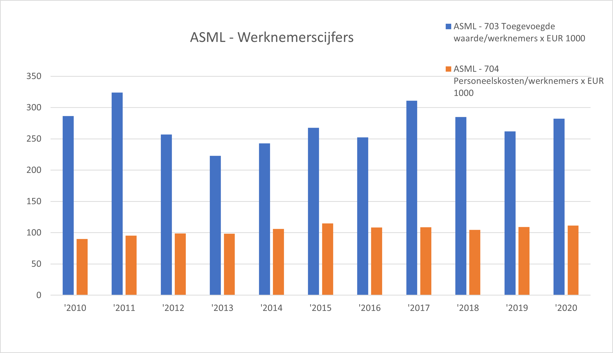

Dit is de fundamentele analyse. De financiele gezondheid wordt gemeten door drie cruciale financial control instrumenten. Deze instrumenten zijn solvabiliteit, liquiditeit en de rentabiliteit.
Solvabiliteit is de mate waarin ASML in staat is om aan de verplichtingen van vreemdvermogenverschaffers te voldoen. Solvabiliteit is belangrijk bij de beoordeling op lange termijn. De vermogenspositie is stabiel. Dit heeft een positief effect op de leencapaciteit. De credit rating is hoog. Het is makkelijk om nieuw vermogen aan te trekken en het risico is laag. Ingrijpen is niet nodig.
| jaar 2018 | jaar 2019 | jaar 2020 | |
|---|---|---|---|
| Solvabiliteit (%) | 59.7 | 57.7 | 50.8 |
| Debt ratio (%) | 40.3 | 42.3 | 49.2 |
| Hefboomfactor | 0.7 | 0.7 | 1 |
ASML heeft een gezonde current en quick ratio die boven de 1 liggen. De schulden zijn op korte termijn betaalbaar. Het nettowerkkapitaal is het verschil van vlottende active en vlottende passiva. Het werkkapitaal is positief, er is meer eigen vermogen en lang vreemd vermogen aangetrokken dan dat er nodig is om de vaste activa te financieren.
| jaar 2018 | jaar 2019 | jaar 2020 | |
|---|---|---|---|
| Current ratio | 2.8 | 2.6 | 2.4 |
| Quick ratio | 1.8 | 1.7 | 1.7 |
| Netto werkkapitaal | 7094800 | 8066100 | 10551200 |
Rentabiliteit geeft aan in welke mate ASML in staat is het beschikbaar gestelde vermogen winstgevend in de onderneming aan te wenden. Rentabiliteit van het totale vermogen is de winst voor interest en belastingen in een percentage van het totale vermogen. Er is een positieve hefboomwerking. ASML behaalt hogere opbrengsten dan de rentekosten voor het vreemd vermogen.
| jaar 2018 | jaar 2019 | jaar 2020 | |
|---|---|---|---|
| Netto winst | 2525500 | 2581100 | 3553700 |
| Bruto winstmarge in % | 26.5 | 23.1 | 29.0 |
| RTV in % | 13.4 | 11.4 | 14.9 |
| REV in % | 19.5 | 18.6 | 25.6 |
Dit is een analyse van het werkkapitaalbeheer en geeft inzicht in de efficiëntie van het gebruik van de productiemiddelen. Het is beter als de voorraaddagen en debiteurendagen dalen, dan is er minder risico op veroudering en het geld staat eerder op de rekening. ASML kan de omloopsnelheid van de voorraad verbeteren door niet meer goederen op te slaan dan nodig. De omloopsnelheid van de voorraden moet ongeveer gelijk zijn aan de minimale tijd die nodig is om deze aan te vullen. Van 2011 tot 2013 stegen de voorraaddagen en daalde de brutowinstmarge. In die periode stond de vraag naar machines waarmee de chips gemaakt werden onder druk. In 2013 kwam 4G uit, waardoor vooruitgang geboekt werd bij de ontwikkeling van die machines. (bron).
| jaar 2018 | jaar 2019 | jaar 2020 | |
|---|---|---|---|
| Debiteurendagen | 50.0 | 55.2 | 34.2 |
| Crediteurendagen | 32.2 | 32.8 | 36.0 |
| Vooraaddagen | 114.7 | 117.6 | 119.3 |
Een werknemersdoelgroep waar ASML zich op richt zijn mensen die een Data Proces Owner kunnen worden. ASML zoekt een Data Proces Owner via de website en Linkedin.
Een Data Proces Owner is specialist op het gebied van datakwaliteit voor de prestatiegegevens van de machines op het gebied van juistheid, volledigheid en tijdigheid. Door de afstemmingskwaliteit te meten en feedback te geven aan engineers helpt een data proces owner om de datakwaliteit te verbeteren. Een Data Proces Owner identificeert gegevens en neemt deel aan projecten om continu de bedrijfsprocessen te verbeteren.
Een geschikte kandidaat heeft een diploma op het gebied van bedrijfsinformatie/- intelligentie of een andere technische opleiding. De kandidaat heeft ervaring met werken met gegevenskwaliteit en rapportage in een Business Information rol. De kandidaat heeft stakeholder management vaardigheden en communicatieve vaardigheden in het Engels. De kandidaat is analytisch en een resultaatgerichte teamspeler.
De Data Proces Owner krijgt flexibiliteit en het vertrouwen om te kiezen hoe de taken en problemen het beste aangepakt kunnen worden. ASML biedt een werkplek waar aan de nieuwste technologie wordt gewerkt, en nieuwe uitdagingen en nieuwe problemen opgelost worden. ASML biedt een creatieve, dynamische werkomgeving waar samengewerkt wordt met ondersteunende collega's.
De kwaliteit van de werknemers is belangrijk om goede prestaties te leveren. Voor de toegevoegde waarde per werknemer wordt uitgegaan van de omzet verminderd met de externe kosten. ASML slaagt er in om meer te doen met minder personeelskosten.
| jaar 2018 | jaar 2019 | jaar 2020 | |
|---|---|---|---|
| Toegevoegde waarde/werknemers x EUR 1000 | 284.8383556 | 261.988027 | 282.2574585 |
| Personeelskosten/werknemers x EUR 1000 | 104.3953303 | 109.1089194 | 111.3774705 |
